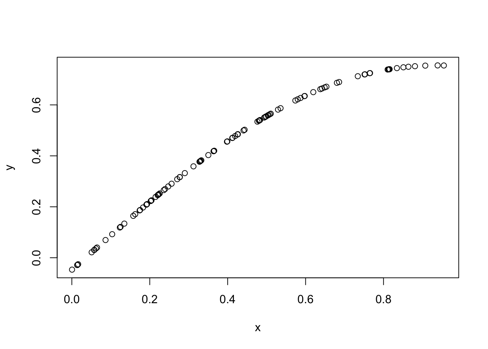
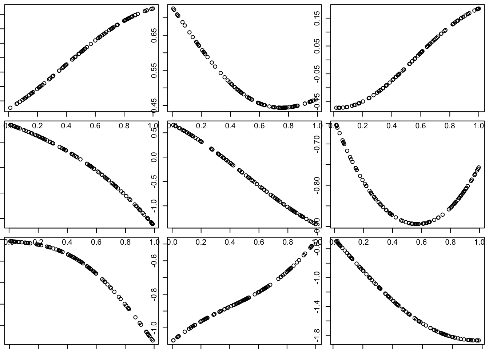
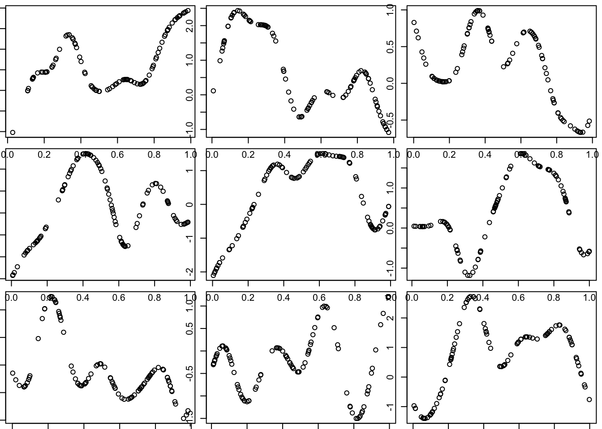
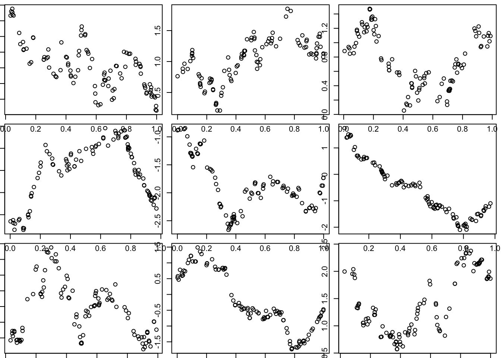
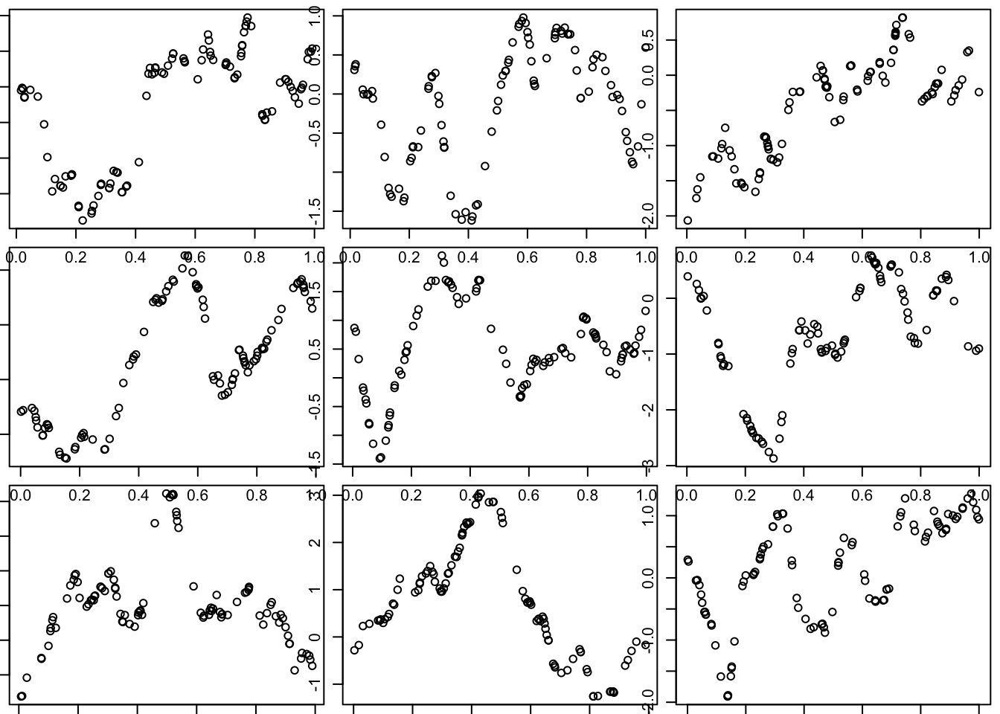

Last updated: 2020-03-01
Checks: 7 0
Knit directory: fiveMinuteStats/analysis/
This reproducible R Markdown analysis was created with workflowr (version 1.6.0.9000). The Checks tab describes the reproducibility checks that were applied when the results were created. The Past versions tab lists the development history.
Great! Since the R Markdown file has been committed to the Git repository, you know the exact version of the code that produced these results.
Great job! The global environment was empty. Objects defined in the global environment can affect the analysis in your R Markdown file in unknown ways. For reproduciblity it’s best to always run the code in an empty environment.
The command set.seed(12345) was run prior to running the code in the R Markdown file. Setting a seed ensures that any results that rely on randomness, e.g. subsampling or permutations, are reproducible.
Great job! Recording the operating system, R version, and package versions is critical for reproducibility.
Nice! There were no cached chunks for this analysis, so you can be confident that you successfully produced the results during this run.
Great job! Using relative paths to the files within your workflowr project makes it easier to run your code on other machines.
Great! You are using Git for version control. Tracking code development and connecting the code version to the results is critical for reproducibility.
The results in this page were generated with repository version 3c311ab. See the Past versions tab to see a history of the changes made to the R Markdown and HTML files.
Note that you need to be careful to ensure that all relevant files for the analysis have been committed to Git prior to generating the results (you can use wflow_publish or wflow_git_commit). workflowr only checks the R Markdown file, but you know if there are other scripts or data files that it depends on. Below is the status of the Git repository when the results were generated:
Ignored files:
Ignored: .Rhistory
Ignored: .Rproj.user/
Ignored: analysis/.Rhistory
Ignored: analysis/bernoulli_poisson_process_cache/
Untracked files:
Untracked: _workflowr.yml
Untracked: analysis/CI.Rmd
Untracked: analysis/gibbs_structure.Rmd
Untracked: analysis/libs/
Untracked: analysis/results.Rmd
Untracked: analysis/shiny/tester/
Note that any generated files, e.g. HTML, png, CSS, etc., are not included in this status report because it is ok for generated content to have uncommitted changes.
These are the previous versions of the repository in which changes were made to the R Markdown (analysis/gaussian_process.Rmd) and HTML (docs/gaussian_process.html) files. If you’ve configured a remote Git repository (see ?wflow_git_remote), click on the hyperlinks in the table below to view the files as they were in that past version.
| File | Version | Author | Date | Message |
|---|---|---|---|---|
| Rmd | 3c311ab | Matthew Stephens | 2020-03-01 | workflowr::wflow_publish(“gaussian_process.Rmd”) |
You need to be familiar with the multivariate normal distribution.
Suppose you want to model the variation of a continuous variable \(T\) – say, temperature – across a spatial region (say think in two dimensions for now). Let \(T(x)\) denote the temperature at any location \(x\) (so think of \(x\) as a position in a space \(\mathcal{X}\)). So \(T\) is a function that maps the space \(\mathcal{X}\) to the real value line \(R\), which we can write \(T: \mathcal{X} \rightarrow R\).
Suppose you measured the temperature at just one location, say \(x = x_1\). The value \(T(x_1)\) would be a scalar, so you could imagine modelling it using a univariate normal distribution.
Similarly, if you measured the temperature at two locations, say \(x_1\) and \(x_2\), then you would obtain two temperatures \(T(x_1),T(x_2)\). If the locations \(x_1\) and \(x_2\) were near to one another then we might expect the two temperatures \(T(x_1)\) and \(T(x_2)\) to be similar to one another. If the locations were further away from one another then maybe the temperatures would be less similar. This suggests one might model the pair \(T(x_1),T(x_2)\) using a bivariate normal distribution, whose covariance depends on the distance between \(x_1\) and \(x_2\) (and decaying with distance).
Now, suppose we measure the temperature at \(r\) locations \(x_1,\dots,x_r\). The natural generalization of the above is to model the temperatures \(T(x_1),\dots,T(x_r)\) as a multivariate (\(r\)-variate) normal distribution with the covariance of \(T(x_i),T(x_j)\) depending on the distance between \(x_i\) and \(x_j\) (and decaying with distance). Notice that, conceptually, the function \(T\) is defined everywhere in space, but we are measuring it at a finite number of points – and we assume that at any finite number of points the values we get will follow a multivariate normal distribution. This idea motivates the definition of a Gaussian process – it is defined in a continuos space, but at any finite number of points it has a multivariate normal distribution.
A stochastic process \({T(x): x \in \mathcal{X}}\) is said to be a Gaussian Process if \((T(x_1),\dots,T(x_r))\) is multivariate normal for all \(x_1,\dots,x_r \in \mathcal{X}\).
Just as a multivariate normal distribution is defined by a mean and a covariance matrix, a Gaussian process is defined by a mean function \(\mu(x) :\mathcal{X} \rightarrow R\) and a covariance function \(\Sigma: \mathcal{X} \cross \mathcal{X} \rightarrow R\). Think of \(\mu(x)\) as specifying the mean of \(T(x)\) for any point \(x\) and \(\Sigma(x_1,x_2)\) as specifying the covariance for any pair of points \(x_1,x_2\). That is: \[E(T(x)) = \mu(x)\] and \[cov(T(x_1),T(x_2)) = \Sigma(x_1,x_2).\]
Given suitable functions \(\mu\) and \(\Sigma\), we could simulate the values \(T(x_1),\dots,T(x_r)\) from a multivariate normal distribution, by first computing the mean (by applying the function \(\mu(\cdot)\) to every point \(x_1,dots,x_r\)) and the covariance matrix (appyling the function \(\Sigma(\cdot,\cdot)\) to every pair of points), and then using a standard method for simulating from a multivariate normal. We will see an example of this below.
Note that the covariance function \(\Sigma\) has to be carefully chosen, so that the covariance matrix it gives for any set of points is a valid covariance matrix. Specifically, the covariance matrix must always be positive semi-definite (PSD), meaning all its eigenvalues are \(\geq 0\). So you can’t just choose any function you like for \(\Sigma\). We will give some common choices below after we have introduced a common simplification.
Gaussian processes become simpler to define and work with if we make two additional simplifying assumptions:
The mean function \(\mu\) is a constant, \(\mu(x) = \mu\) for all \(x\).
The covariance function \(\Sigma(x_1,x_2)\) depends only on the distance between the two points, \(d(x_1,x_2)\). That is \(\Sigma(x_1,x_2) = K( d(x_1,x_2) )\) for some function \(K\) that maps distance to covariance.
A Gaussian process that satisfies these two assumptions is said to be Stationary and Isotropic.
This simplifies defining a Gaussian process because we just have to specify the mean \(\mu\) (a number) and the function \(K(d)\), which says how covariance declines with distance \(d\). Again, because we need the covariance matrix to be PSD, only certain choices of \(K\) are valid. Three simple common choices of \(K\) that lead to valid PSD covariances are:
Squared exponential: \(K(d; l) = \exp(-|d|^2/2l^2)\) where \(l\) is a parameter that determines the length scale over which the covariance decays (e.g. does covariance of temperature decay over meters, or kilometers, or hundreds of kilometers?).
Ornstein–Uhlenbeck: \(K(d; l) = \exp(-|d|/l)\), where again \(l\) is a parameter that controls the length scale.
Matérn: whose form is a bit more complicated, but is easily computed using the geoR package below. The Matérn covariance function is widely used in Geostatistic applications.
To help understand a new distribution it can often be helpful to simulate from it. Here we look at some simulations from a few different Gaussian processes. In these examples we look at one-dimensional examples, just because they are much easier to plot and visualize. One-dimensional GPs are also useful - e.g. to model the way that variables vary along a 1-d space (e.g. with time or along the human genome).
So here we generate 100 points \(x_1,\dots,x_{100}\) in the range \([0,1]\) and simulate the value of a Gaussian process at those 100 points using the squared exponential kernel.
set.seed(11)
x = runif(100)
d = abs(outer(x,x,"-")) # compute distance matrix, d_{ij} = |x_i - x_j|
l = 1 # length scale
Sigma_SE = exp(-d^2/(2*l^2)) # squared exponential kernel
y = mvtnorm::rmvnorm(1,sigma=Sigma_SE)
plot(x,y)
You can see that effectively this simulation has created a “curve” in which \(y\) varies smoothly with \(x\). Indeed, a GP can be thought of as a distribution on curves (whose smoothness depends on the covariance function used, as we will see later).
Of course, this is just one random curve (and only measured at 100 points, although conceptually it is defined at all points in the space). Here we generate nine different simulations:
par(mfcol=c(3,3),mar=c(0.5,0.5,0.5,0.5))
for(i in 1:9){
x = runif(100)
d = abs(outer(x,x,"-")) # compute distance matrix, d_{ij} = |x_i - x_j|
Sigma_SE = exp(-d^2/(2*l^2)) # squared exponential kernel
y = mvtnorm::rmvnorm(1,sigma=Sigma_SE)
plot(x,y)
}
Notice that these curves do not change very quickly with distance. We can get curves that change more quickly by using a smaller length scale parameter \(l\) in the covariance function.
Try making the covariance decay faster with distance:
l = 0.1 # smaller length scale
par(mfcol=c(3,3),mar=c(0.5,0.5,0.5,0.5))
for(i in 1:9){
x = runif(100)
d = abs(outer(x,x,"-")) # compute distance matrix, d_{ij} = |x_i - x_j|
Sigma_SE = exp(-d^2/(2*l^2)) # squared exponential kernel
y = mvtnorm::rmvnorm(1,sigma=Sigma_SE)
plot(x,y)
}
Here we use the covariance function for what is known as the “Ornstein–Uhlenbeck process”, which you can think of as a modified Brownian motion, where the modification tends to pull the process back towards 0. (Unmodified BM tends to wander progressively further from 0.)
Notice that visually these functions seem much “rougher” than those produced by the squared exponential function. (And indeed this visual impression is correct: the functions produced by the OU covariance are not differentiable, although they are continuous.)
l = 1 # length scale
par(mfcol=c(3,3),mar=c(0.5,0.5,0.5,0.5))
for(i in 1:9){
x = runif(100)
d = abs(outer(x,x,"-")) # compute distance matrix, d_{ij} = |x_i - x_j|
Sigma_OU = exp(-d/l) # OU kernel
y = mvtnorm::rmvnorm(1,sigma=Sigma_OU)
plot(x,y)
}
The Matern covariance function produces curves that are a smoother than OU, but not as smooth as SE:
library("geoR")Warning in fun(libname, pkgname): couldn't connect to display ":0"--------------------------------------------------------------
Analysis of Geostatistical Data
For an Introduction to geoR go to http://www.leg.ufpr.br/geoR
geoR version 1.8-1 (built on 2020-02-08) is now loaded
--------------------------------------------------------------l = 0.1 # length scale
par(mfcol=c(3,3),mar=c(0.5,0.5,0.5,0.5))
for(i in 1:9){
x = runif(100)
d = abs(outer(x,x,"-")) # compute distance matrix, d_{ij} = |x_i - x_j|
Sigma_M = matern(d,phi=l,kappa=1)
y = mvtnorm::rmvnorm(1,sigma=Sigma_M)
plot(x,y)
}
sessionInfo()R version 3.6.0 (2019-04-26)
Platform: x86_64-apple-darwin15.6.0 (64-bit)
Running under: macOS Mojave 10.14.6
Matrix products: default
BLAS: /Library/Frameworks/R.framework/Versions/3.6/Resources/lib/libRblas.0.dylib
LAPACK: /Library/Frameworks/R.framework/Versions/3.6/Resources/lib/libRlapack.dylib
locale:
[1] en_US.UTF-8/en_US.UTF-8/en_US.UTF-8/C/en_US.UTF-8/en_US.UTF-8
attached base packages:
[1] stats graphics grDevices utils datasets methods base
other attached packages:
[1] geoR_1.8-1
loaded via a namespace (and not attached):
[1] Rcpp_1.0.3 knitr_1.26 whisker_0.4
[4] magrittr_1.5 workflowr_1.6.0.9000 MASS_7.3-51.4
[7] lattice_0.20-38 R6_2.4.1 rlang_0.4.2
[10] stringr_1.4.0 RandomFields_3.3.8 tcltk_3.6.0
[13] tools_3.6.0 grid_3.6.0 xfun_0.12
[16] git2r_0.26.1 RandomFieldsUtils_0.5.3 htmltools_0.4.0
[19] yaml_2.2.0 digest_0.6.23 rprojroot_1.3-2
[22] later_1.0.0 splancs_2.01-40 promises_1.1.0
[25] fs_1.3.1 glue_1.3.1 evaluate_0.14
[28] rmarkdown_2.0 sp_1.3-2 stringi_1.4.5
[31] compiler_3.6.0 backports_1.1.5 mvtnorm_1.0-12
[34] httpuv_1.5.2 This site was created with R Markdown